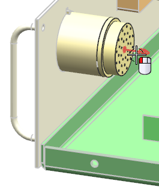
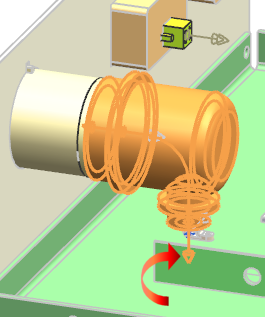

Add a backshell to the circular connector
-
Select Place Part
 .
.
-
Click Open
 , then double-click rte1_hl_backshell.
, then double-click rte1_hl_backshell.
-
点击确定。
-
Select the port on the back of the connector.

The part is initially placed with its fixture port pointing downward.

Since the fitting port on the backshell has no rotation vector, it has no Lock Rotation option and is free to rotate about the 33–pin connector at any angle.
You need to rotate the backshell so that the fixture port is angled 45 degrees towards the center of the drawer.